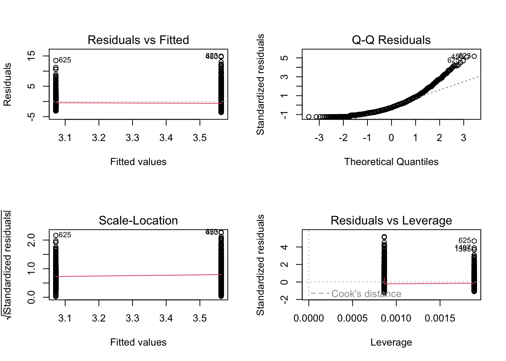
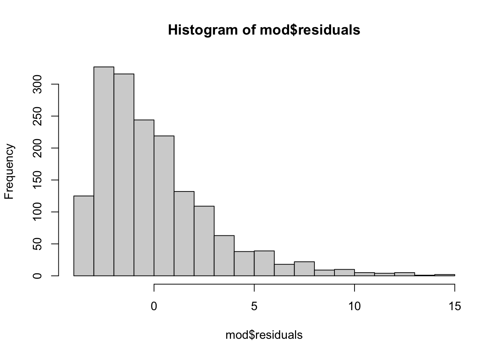
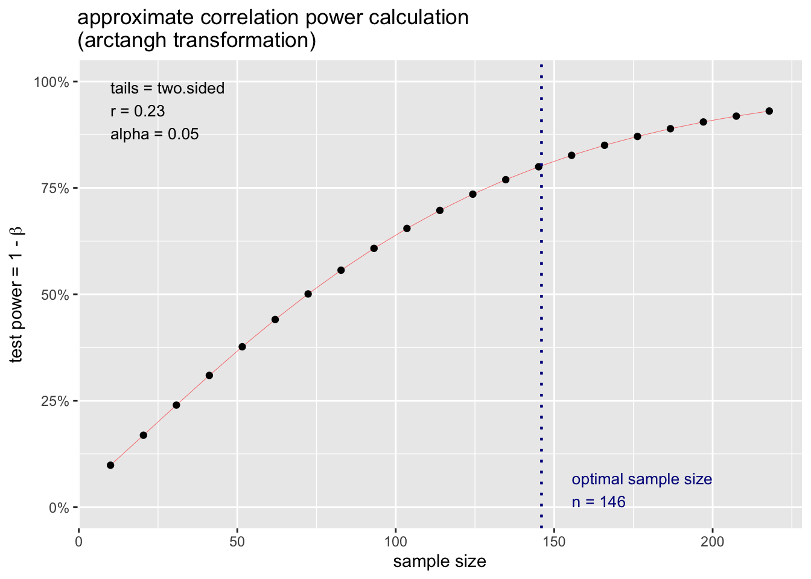

Talking to your advisors / graduate students / TAs (/my old dissertation data?)
Other sources / ideas?
Brain Exam pushed back a week.
Comments on the Mid-Semester Evaluation
ideas for changes
“…find ways to have more class participation in the presentations so we can really get into the topics and have a communal sense of the class, but thats not something the professor can control so I think its good as is.”
“…dive more into the statistics itself so i have some theoretical background for the tests im doing (for example, our method for our thesis was due yesterday, and i was struggling to understand how to apply LME to my neural time series data..”
“…I think having some moment when there’s time to pause… it doesn’t have to be a 2-3 min pause, just like 20 sec so I can write the code as fast as the professor does.”
other comments :
“I’m still a little confused about data cleaning and when we should really take out data; how much is okay to remove from the dataset.”
“How are the article presentations supposed to help us?”
“Honors has been very stressful… but its ok.”
LAST TIME, ON METHODS IN PSYCHOLOGY….
We Found a Model
library(psych)library(gplots)
Attaching package: 'gplots'
The following object is masked from 'package:stats':
lowess
d <-read.csv("~/Dropbox/!GRADSTATS/gradlab/Exams/objectivityposted.csv", stringsAsFactors = T)names(d)
I Asked Y’all To Do Some Interpretation of the Regression Assumptions.
Validity. Were the data measured and collected in a valid way?
Reliability. Were the data measured with high reliability?
Independence. Does one data point give you any information about another individual’s data point? (if yes, then not independent.)
Linearity. Are the predicted values of Y based on a constant and linear relationship with X?
par(mfrow =c(2,2))plot(mod)

Heteroscedasticity. Is there constant variation in the residuals across the fitted values?
Normality of Errors. Are the residuals in the model normally distributed?
hist(mod$residuals, breaks =20)

Transforming Regression Coefficients.
Sometimes, we need (or want) to change the structure of our data to address violated assumptions, or change the units and our interpretation.
Numeric Transformations
RECAP : Linear Transformations
Linear transformations change the units, but do not change the position of the individual data point.
“Percent of Maximum Possible” (POMP)
equation and example :\(100*\frac{x}{max(x)}\)
what it does : stretches out the scale of a variable, so 0 = people who scored the lowest and 100 = people who scored the highest.
when to use : maybe helps people conceptualize likert scales (but also can exaggerate effects; e.g., a 1-5 scale turns into a 0-100 scale, which makes the slope seem larger)
Mean-Centering :
equation and example :\(x - mean(x)\)
what it does : redefines individual scores in terms of how far above or below the mean they are.
when to use : you want zero to be defined as the average of the variable, but do not want to lose the units of measurement (e.g., a zero for heart rate BMP is dead, but zero of mean-centered BMP is the average heart rate)
Non-Linear Transformations : Log; Square-Root; Exp; etc.
Log Transformation.
equation and example : see the table below. Logs are confusing (I think.)
what it does : compresses the scale of a variable (the log takes a number, and transforms it to be the exponent which a specific base must be raised to create the number).
when to use : address heteroscedasticity by normalizing positively skewed data (e.g., count data; data with a floor effect); natural log is used in growth models.
Transformation in R
Base (b)
Formal Definition
Example
log(x) # natural log
\(e\) (Euler’s Number)
\(\log_{e}(x) \text{ or } \ln(x) = y \implies e^y = x\)
log10(x) # log base 10
\(10\)
\(\log_{10}(x) = y \implies 10^y = x\)
\(\log_{10}(100) = 2\) because \(10^2 = 100\)
Square-Root Transformation.
equation :\(\sqrt{x}\) or \(x^{1/2}\)
in R :sqrt(x) or x^.5
what it does : compresses the scale of a variable.
when to use : address heteroscedasticity; normalize positively skewed data.
Reciprocal Transformation.
equation :\(1/x\) or \(-1/x\)
in R :1/x
what it does : flips the data around
when to use : good when you want to reverse the order of data that are the same sign (e.g., make the largest value become the smallest value), or change the interpretation of some ratio data (e.g., convert “heart beats per minute into minutes per heart beat”.)
Exponential Transformation.
what it does : expands the scale of the variable;
when to use :
DISCUSSION : Below are these three transformations applied to our measure of power words.
What do you see?
Which transformation seems the best to apply to our linear model? (And why?)
How do we know whether this transformation improved our model?
Categorical Transformations
Re-leveling categorical variables.
Effect or Contrast Coding
Giving Context To Our Slope : The T-Test
A t-test does compares this difference between groups (our slope) to an estimate of sampling error.
\[
t = b / se
\]
Sampling Error.
Previously, we’ve estimated sampling error using bootstrapping.
## Sampling Error (Bootstrapping)bucket <-array()for(i inc(1:1000)){ dboot <- d[sample(1:nrow(d), nrow(d), replace = T), ] modboot <-lm(power ~ pocuF, data = dboot) bucket[i] <-coef(modboot)[2]}mean(bucket) # should be close to original model
[1] 0.4985354
sd(bucket) # the estimate of sampling error
[1] 0.1401921
The Standard Error.
The standard error estimates how much of a difference we might find if we were drawing a random sample from a population where there was no difference in groups (the null population.)
The basic equation for the standard error is :\(se = sd(x) / \sqrt{n}\)
You can calculate this “by hand” if you’d like.
## Pooling the SDd0 <- d[d$pocuF =="Authors of Color",]d1 <- d[d$pocuF =="White Authors",]## calculating the sample size of these two new datasets.n0 <-nrow(d0)n1 <-nrow(d1)df0 <- n0-1# the sample size, minus 1df1 <- n1-1var0 <-var(d0$power)var1 <-var(d1$power)poolvar <- ((df1 * var1) + (df0 * var0))/(df1 + df0)sqrt((poolvar/n0) + (poolvar/n1))
[1] 0.1513899
However, most students and researchers do not like to do things by hand. And so we can easily pull up these statistics using the summary() function. The interpretation of these statistics will take more time!
summary(mod)
Call:
lm(formula = power ~ pocuF, data = d)
Residuals:
Min 1Q Median 3Q Max
-3.5632 -2.0955 -0.7677 1.2943 14.9068
Coefficients:
Estimate Std. Error t value Pr(>|t|)
(Intercept) 3.0722 0.1254 24.491 <2e-16 ***
pocuFWhite Authors 0.4910 0.1514 3.243 0.0012 **
---
Signif. codes: 0 '***' 0.001 '**' 0.01 '*' 0.05 '.' 0.1 ' ' 1
Residual standard error: 2.885 on 1686 degrees of freedom
Multiple R-squared: 0.006201, Adjusted R-squared: 0.005612
F-statistic: 10.52 on 1 and 1686 DF, p-value: 0.001204
Standard Error is similar to the sampling error we estimated through bootstrapping.1
1 (And side note : to get what R calculates in our model, we will weight each pooled variance by the sample size of each group.)
summary(mod)$coefficients[2,2] # pulling out the standard error of the slope.
[1] 0.1513899
sd(bucket) # pretty close!! wow!!!!
[1] 0.1401921
Conceptual and Computational Differences Between NHST and Bootstrapping
we want to estimate how much our statistics might change due to re-sampling, because our sample isn’t a perfect representation of the population.
we generate lots of “new” samples from our original dataset. these new samples are the same size as our original sample, but we use sampling with replacement to make sure we don’t get the exact same people in the sample every time. the goal is to see how small changes to our sample (that we might find with sampling error) influence our results (the model).
we calculate a statistic that is based on:
the variance in our sample (with the idea that the more individuals vary in the sample, the more sampling error we might have)
our sample size (with the idea that the larger our sample, the less sampling error we will find.)
statistic we care about that defines sampling error
standard deviation of the 1,000 (or however many) slopes we generated from bootstrapping.
standard error (estimates how much the average slope would differ from b = 0….the expected slope assuming the null)
how to evaluate our slope, relative to sampling error
calculate the % of slopes in the same direction as our slope
calculate 95% confidence intervals, and see whether that range includes zero and / or numbers in the opposite direction of the slope you found. (e.g., if you found a negative number, does the range include positive numbers? If so, then likely we’d find a positive relationship due to chance)
t-value : evaluates slope you found, relative to slope you might find due to random chance.
use the t-value to calculate the probability given your distribution, and reject if p < .05
(or be more conservative and reject if p < .01 or p < .001).
Yes, professor, but I learned about t-tests as their own thing?
Note that the t-test does the same thing that our linear model does; evaluates the difference in groups, relative to an estimate of the sampling error we might observe.
t.test(d0$power, d1$power, var.equal = T)
Two Sample t-test
data: d0$power and d1$power
t = -3.2435, df = 1686, p-value = 0.001204
alternative hypothesis: true difference in means is not equal to 0
95 percent confidence interval:
-0.7879644 -0.1941005
sample estimates:
mean of x mean of y
3.072212 3.563244
Power : the probability that you would “correctly” observe a “true” relationship between two variables that exists.
goal : you want power to be HIGH. Power increases as…
the effect size increases : the bigger the difference, the more likely you’ll detect it.
your sample size increases : the more people, the less sampling error, and the easier it is to have conidence that any difference you found is not just chance.
you increase the threshold for rejecting the null hypothesis : if the probability
assumptions : there is a true relationship; you have observed this relationship.
Reasons to Calculate Power :
Post-Hoc Power : You did a study, and want to evaluate
Power Planning : You are planning to run a study, and want to know how many people to recruit to have the highest probability of observing the “true” effect (if it exists.)
a tour of null and alternative realities
Watch the lecture recording (posted to bCourses) for a tour through these slides.
calculating in R (by hand)
mod # a model object
Call:
lm(formula = power ~ pocuF, data = d)
Coefficients:
(Intercept) pocuFWhite Authors
3.072 0.491
summary(mod) # a function applied to the object
Call:
lm(formula = power ~ pocuF, data = d)
Residuals:
Min 1Q Median 3Q Max
-3.5632 -2.0955 -0.7677 1.2943 14.9068
Coefficients:
Estimate Std. Error t value Pr(>|t|)
(Intercept) 3.0722 0.1254 24.491 <2e-16 ***
pocuFWhite Authors 0.4910 0.1514 3.243 0.0012 **
---
Signif. codes: 0 '***' 0.001 '**' 0.01 '*' 0.05 '.' 0.1 ' ' 1
Residual standard error: 2.885 on 1686 degrees of freedom
Multiple R-squared: 0.006201, Adjusted R-squared: 0.005612
F-statistic: 10.52 on 1 and 1686 DF, p-value: 0.001204
sm <-summary(mod) # saving this as an objectobjects(sm) # there is more inside.
Estimate Std. Error t value Pr(>|t|)
(Intercept) 3.0722117 0.1254447 24.490557 1.418967e-113
pocuFWhite Authors 0.4910325 0.1513899 3.243495 1.203825e-03
sm$coefficients[2,3] # our t-value
[1] 3.243495
mtval <- sm$coefficients[2,3]qt(.975, df =147) # t-distribution approaches the normal distribution (with a 95% Interval cutoff of 1.96....) but we are not quite there.
[1] 1.976233
mcut <-qt(.975, 147) # t-distribution approaches the normal distribution (with a 95% Interval cutoff of 1.96....) but we are not quite there.pt(mtval - mcut, df =147) # our power.
[1] 0.8964672
calculating in R (a package)
# install.packages("pwr")library(pwr)summary(mod)
Call:
lm(formula = power ~ pocuF, data = d)
Residuals:
Min 1Q Median 3Q Max
-3.5632 -2.0955 -0.7677 1.2943 14.9068
Coefficients:
Estimate Std. Error t value Pr(>|t|)
(Intercept) 3.0722 0.1254 24.491 <2e-16 ***
pocuFWhite Authors 0.4910 0.1514 3.243 0.0012 **
---
Signif. codes: 0 '***' 0.001 '**' 0.01 '*' 0.05 '.' 0.1 ' ' 1
Residual standard error: 2.885 on 1686 degrees of freedom
Multiple R-squared: 0.006201, Adjusted R-squared: 0.005612
F-statistic: 10.52 on 1 and 1686 DF, p-value: 0.001204
mr <-summary(mod)$r.squared^.5pwr.r.test(n =149, r = mr)
approximate correlation power calculation (arctangh transformation)
n = 149
r = 0.07874694
sig.level = 0.05
power = 0.1594073
alternative = two.sided
more power examples!
Power Illustrated.
In lecture, professor did some scribbles on the whiteboard to illustrate power, and tried to record these. He also said that he would record a few other videos.
Prof. did not, in fact, find time in the present moment to record new videos. Bummer! But he did remember that he had recorded similar videos, and found some from 2018. (What were you doing in 2018?? Let us know on Discord; and as always - reach out if you still have questions about power!!)
Recording #2 : Another Example. Couldn’t immediately track down the original data analyses these refer to, but the slope (b = .44) and other statistics come from a paper I had rejected in part because reviewers complained that I only replicated the main result in 4 out of 5 studies. (The paper was also a hot mess.) Bummer! But it was a cool phenomenon; I sadly never published on it for a variety of REASONS, but the truth got out eventually someone published a very clearly written, much better, and perfectly replicating paper (across six studies!) on it 8 years later. Ahhh, one thing off the to-do list!
Estimating Sample Size.
As discussed in the lecture slides (see recording), power is a function of effect size, sample size, and the alpha level (alpha = the Type I error that the researcher sets). This means that you can use these functions to estimate the sample size you need for a given power (the convention is often 80%).
Let’s say I want to know what sample size I need to detect a slope of r = .23.
From the pwr package, I can define this effect, specifcy the power, type I error level, and whether I want to do a 1- or 2-tailed test.
pwr.r.test(r = .23, power = .80, alternative ="two.sided")
approximate correlation power calculation (arctangh transformation)
n = 145.2367
r = 0.23
sig.level = 0.05
power = 0.8
alternative = two.sided
I can also plot the result of this output and see how power increases as a function of my sample size.
p.ex <-pwr.r.test(r = .23, power = .80, alternative ="two.sided")plot(p.ex)

…but you don’t have to take my word for it.
The approach to power described above assumes a normally distribution of sampling error. This is a good starting place, but not all distributions are gaussian! Below are a few different methods to help you estimate power across a wide variety of types of data.

Comments on the Mid-Semester Evaluation
ideas for changes
other comments :